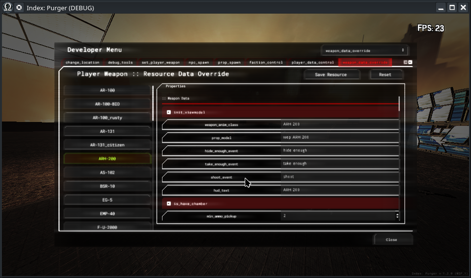

Module: dev_menu
Documentation last edited: October 23, 2025 at 14:33 UTC
Description
Developer menu that has a ton of features that earlier used to be only a part of console commands. Other than that provides very handy tools to change configs of weapons or NPCs on-the-fly making balancing a tight bit easier than ever before. But of course, inside of
"dev_menu_control.gd"
, there is a damn hell. This entire thing was written in 12-hour marathon with no extensibility in mind. It's just one, huge, monolithic script that looks like hell, reads like hell, and is, in fact, the damn hell. No, it doesn't mean i'll try to change it :)

Tabs / Functionality
change_location
- A list of locations you can change to. Current location is highlighted in green.
debug_tools
- A bunch of debug tooling functions you can use. Most of them have self-explanatory namings, so you shouldn't have a problem navigating yourself.
set_player_weapon
- A list of all player weapons, which also includes all medicals/drugs too because they are technically weapons in this game.
npc_spawn
- A list of all NPC classes that you can potentially spawn with possibility of changing their config slightly.
prop_spawn
- A list of all
LocationProp
models that you can spawn.
faction_control
- Faction manager that allows you to edit relationship between currently existing factions.
player_data_control
- A menu that allows you to change certain parameters of the player.
weapon_data_override
- A menu that allows you to edit raw values of ANY player weapon data, allowing you to temporarily override it for the sake of faster balancing checks. Please be advised,
if you have any weapons on you - edited values will not apply to them UNTIL you drop them and pick them up.
Pressing "Save Resource" button allows you to save edited values permanently, otherwise they will be reset after you relaunch the game.
npc_weapon_data_override
- Same as
weapon_data_override
, but for configs of NPC weapons.
npc_data_override
- Same as
weapon_data_override
, but for configs of NPC's character data.
armor_data_override
- Same as
weapon_data_override
, but for configs of player's armor (which are loadout items).
perk_data_override
- Same as
weapon_data_override
, but for configs of player's perks.
music
- Same as... nothing really. Just a boombox in your menu, blasting music of this game. Contains a list of all music in this game.
location_sound
- A list of all available location sounds.
voicelines
- A list of all available voicelines.
soundscape
- A list of all available soundscapes. Be careful, if you switch a soundscape with this menu - it will override it and soundscape nodes won't apply their values until you press "Stop Soundscape".
difficulty
- An editor menu for changing difficulty values for better balancing control.
environment
- An environment editing menu that allows you changing parameters of current
Environment
in real-time. Works the best with locations that aren't using lightmaps, because changes can be noticed immediately.
color_grading
- A list of all available color grading LUTs that you can switch to.
achievements
- A list of all achievements in this game that you can lock/unlock depending on the status of checkboxes.
loadout_item_unlock
- A list of all loadout items that you can lock/unlock depending on the status of checkboxes.
values
- A list of all
Values
global values that you can view/edit as you wish.
globals
- A list of all
Globals
global values that you can view/edit as you wish.
loadout_selection
- A loadout selection menu that allows you to choose any loadout item and assign it to yourself
Ways to add your own stuff
So you decided to add something into this thing. Oh god, oh poor soul... What horrors you are about to witness... Either way there are ways. You practically need two things:
1.
"res://modules/dev_menu/src/ui/dev_menu_control.gd"
- Open this terrible script
2.
"res://modules/dev_menu/assets/ui_scenes/dev_menu.tscn"
- Open this scene
From here, you have multiple options:
- Adding your own debug tool:
1. Find
"tabs/debug_tools/scroll/vbox"
node
2. There's multiple grids which are related to different categories, pick your poison and create a new button in one.
3. Create a new function in
"dev_menu_control.gd"
. If your button's name is
be_happy
, then you need to name your function
func debug_be_happy():
, this way dev-menu will automatically assign a signal to this function and it'll work
- Adding your own tab:
There's not so magic in this one, really. All tabs are just
Control
nodes that are parented to
"tabs"
node. It's just simple, dumb work with Godot's UI elements. Put your functions anywhere, just slap it with a duct tape. You can put all your initialization function calls at
initialize()
function
General Information
Root directories list
assets, docs, src
Nodes
Classes
None
Resources
None
Other Scripts
None